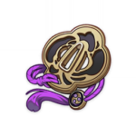

Е Лань

Е Лань - 5-звездочный персонаж стихии Гидро, который использует в бою лук.
Билд "Побочный урон Гидро"
Оружие
Элегия погибели
Увеличивает мастерство стихий на 60/75/90/105/120. Когда элементальный навык или взрыв стихии персонажа, владеющего этим оружием, поражают врагов, этот персонаж получает Талисман воспоминаний. Этот эффект может срабатывать 1 раз каждые 0,2 секунды и может срабатывать, даже если указанного персонажа нет на поле боя. Когда у вас есть 4 Талисмана, они будут поглощены, и все ближайшие члены группы получат эффект "Тысячелетняя симфония: Прощальный гимн" на 12 секунд. Эффект увеличивает мастерство стихий на 100/125/150/175/200 и атаку на 20/25/30/35/40%. Как только этот эффект сработает, вы не сможете получать Талисман воспоминаний в течение 20 секунд. "Тысячелетняя симфония" с эффектами, которые влияют на те же навыки, не складывается.
или
Боевой лук Фавония

Критические попадания имеют шанс 60/70/80/90/100% создать 1 элементальную сферу, которая восстановит 6 энергии для персонажа. Может срабатывать 1 раз каждые 12/10,5/9/7,5/6 секунд.
Артефакты
Эмблема рассечённой судьбы
(2) +20% к перезарядке энергии
(4) Увеличивает урон взрыва стихий на 25% от перезарядки энергии. Таким образом можно получить максимум 75% дополнительного урона.
или

Церемония древней знати
(2) +20% к урону от взрыва стихии.
(4) Использование взрыва стихии увеличивает атаку всех членов группы на 20% на 12 секунд. Этот эффект не суммируется.
Рекомендуемые характеристики артефактов
Основные

Восстановление энергии / Здоровье%

Урон Гидро / Здоровье%

Шанс критического попадания / Критический урон / Здоровье%
Второстепенные
- 1.Восстановление энергии
- 2.Здоровье / Шанс критического попадания / Критический урон
- 3.Здоровье